Стоматологи
Це художники посмішок і позитивних емоцій. Кожен раз, коли від нас ідуть задоволені, радісні, а головне - здорові пацієнти, ми розуміємо, що працюємо не даремно.
KO.dent · Київ
Естетична стоматологія преміум-класу у центрі Києва
Записатися на прийомм. Либідська · Французький квартал 2
Про нас
Індивідуальний підхід до кожного пацієнта — це наше правило
Це художники посмішок і позитивних емоцій. Кожен раз, коли від нас ідуть задоволені, радісні, а головне - здорові пацієнти, ми розуміємо, що працюємо не даремно.
Зберегти здоров`я зубів і ясен на довгі роки легко, якщо відповідально підходити до цього питання. А ми вам у цьому допоможемо. Профілактичні заходи дозволяють попередити захворювання, або діагностувати їх на ранній стадії, що істотно спрощує лікування.
Ми постійно навчаємось, інвестуємо в сучасні матеріали та обладнання, щоб забезпечити вас кращим, швидшим, легшим та більш комфортним лікуванням.
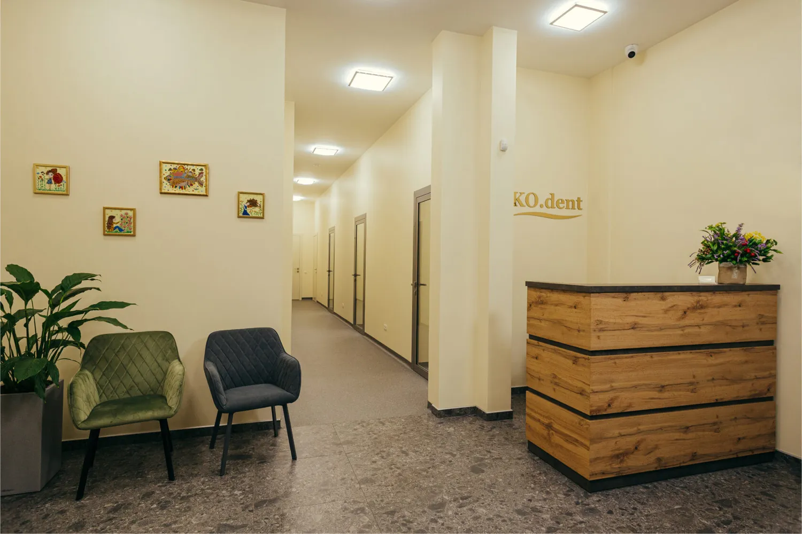
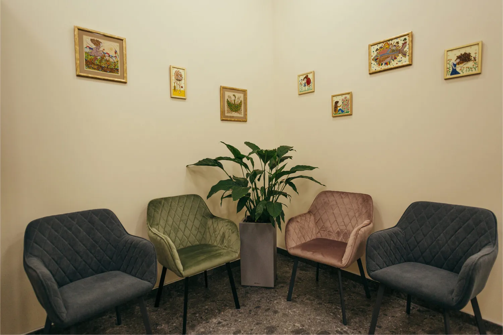
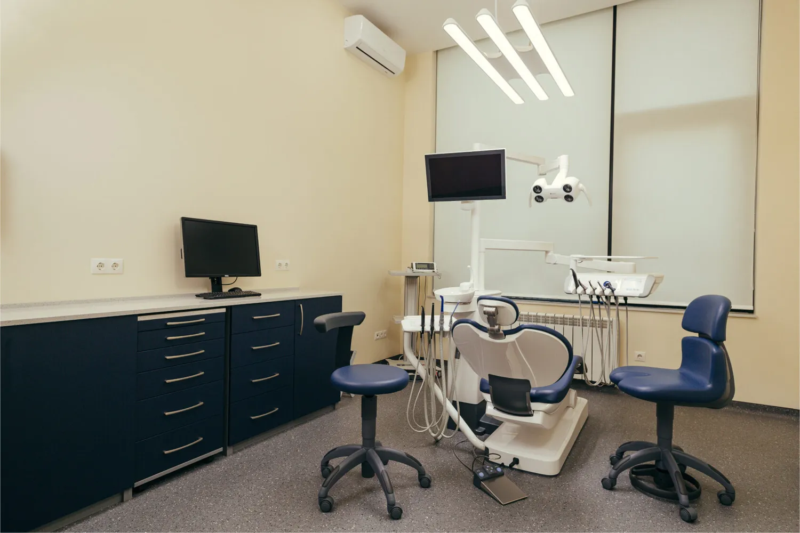
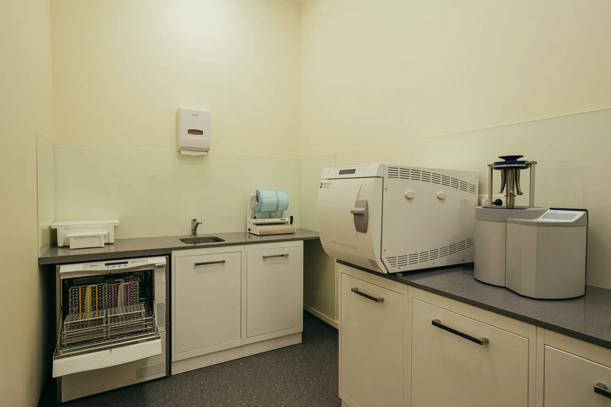
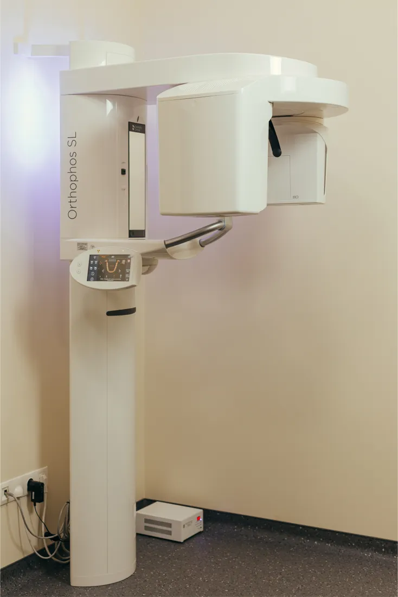
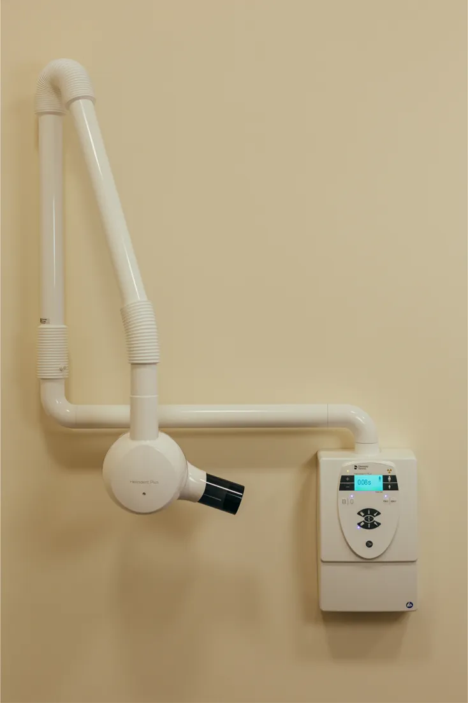
Послуги
Креативний підхід для вирішення проблем, пов`язаних із захворюваннями ротової порожнини
Стоматологія для вашої сім`ї
Ми враховуємо індивідуальні потреби вашої сім`ї та гарантуємо уважне ставлення та постійний догляд.
Професійна гігієна ротової порожнини
Лікування кореневих каналів (ендодонтія)
Пародонтальна терапія
Якщо до останнього відкладати лікування зубів, проблеми збільшуватимуться. Чим глибше проникає карієс, тим складніше його лікувати.
Давно минули ті часи, коли лікарі були мучителями, а бормашина нагадувала інструмент для тортур. Нинішні технології дозволяють лікувати зуби без краплі болю.
Фотополімерна пломба
Художня реставрація
Це метод відновлення естетичних та функціональних параметрів зуба при його частковому руйнуванні, який вимагає особливих навичок і великого досвіду від стоматолога.
Наші спеціалісти в щоденній практиці застосовують найновітніші технології, які спрямовані не тільки на естетику, але і на функціональність.
Ми враховуємо усі Ваші побажання щоб зробити Вашу посмішку привабливою та неповторною.
Бракує впевненості? Прагнете самовираженості? Яскрава білосніжна посмішка може вам у цьому допомогти. Їжа, напої, медикаменти, куріння, вік чи травми можуть вплинути на колір зубів, що робить посмішку невиразною та менш яскравою.
Стоматологія сьогодення пропонує декілька методик професійного відбілювання зубів, кожна з яких є унікальною та має свої переваги та недоліки. Ми можемо Вам допомогти у виборі, враховуючи ваші побажання та індивідуальні особливості.
Відбілювання зубів
Відбілювання в домашніх умовах
Апаратне відбілювання
Ендовідбілювання
Імплантологія
Бракує одного чи декількох зубів? Без паніки. Дентальні імплантанти є розумним вирішенням даної проблеми. І Ви з легкістю повертаєтеся до звичного ритму та ваших улюблених справ.
Відновлююча стоматологія
Коронки та мости
Вініри
Вкладки, накладки
Часткові та повні протези
Хірургічний прийом
На жаль, іноді зуб неможливо врятувати. Це відбувається з багатьох причин: неправильна або невчасна гігієна ротової порожнини, карієс, травма… Але щоб не сталося, в разі необхідності видалення зуба, наші лікарі будуть раді допомогти Вам!
Спеціалісти стоматологічної клініки KO.dent, використовуючи сучасне обладнання, допоможуть вирішити будь-яку Вашу стоматологічну проблему швидко й безболісно!
Відгуки
Ми впевнені, що найважливіша і найприємніша нагорода - це позитивні і захоплені відгуки наших відвідувачів. Ми дорожимо своєю репутацією, тому завжди працюємо в повну силу.
Прекрасная стоматология! Новенькая, чистота везде идеальная, если вы педант на тему чистоты, как я, то негде прикопаться. Но это не главное - главное это золотые руки врачей.Очень вежливо, позитивно, с легкостью вошли в мою ситуацию с отменой визита в последний момент и без проблем перенесли на удобное мне время. Для меня - идеальное сочетание мастерства, сервиса, чистоты!Не пытались заработать, как в других местах, а объясняли ситуацию и предлагали разные варианты с разными ценами. Рекомендую! Остался доволен.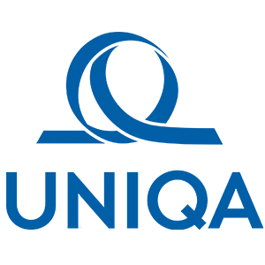
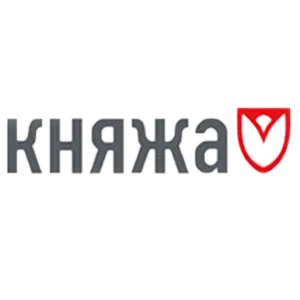
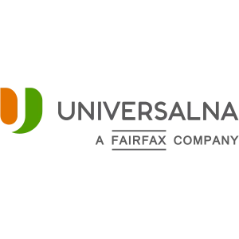
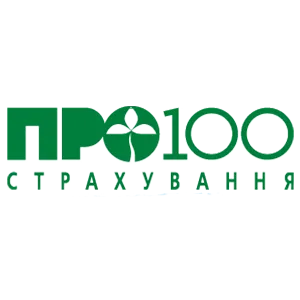
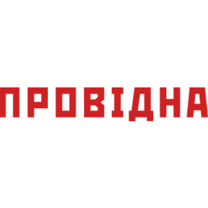
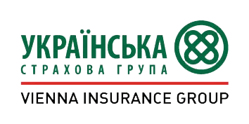
ст. м. Либідська
ЖК «Французький квартал 2»
Пн-Пт: 9:00-19:00
Сб-Нд: Вихідний